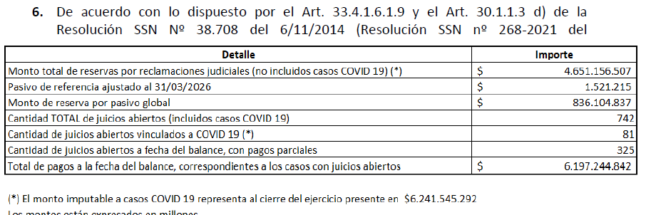
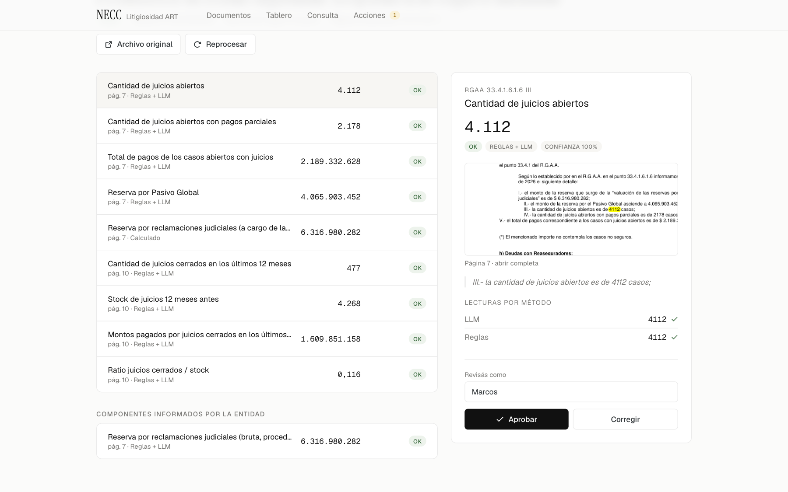
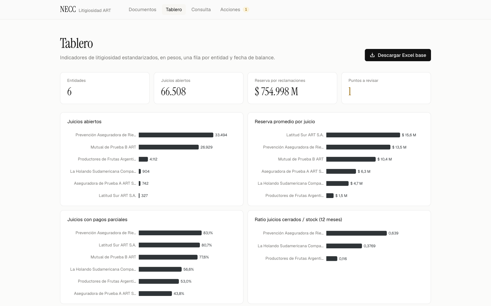
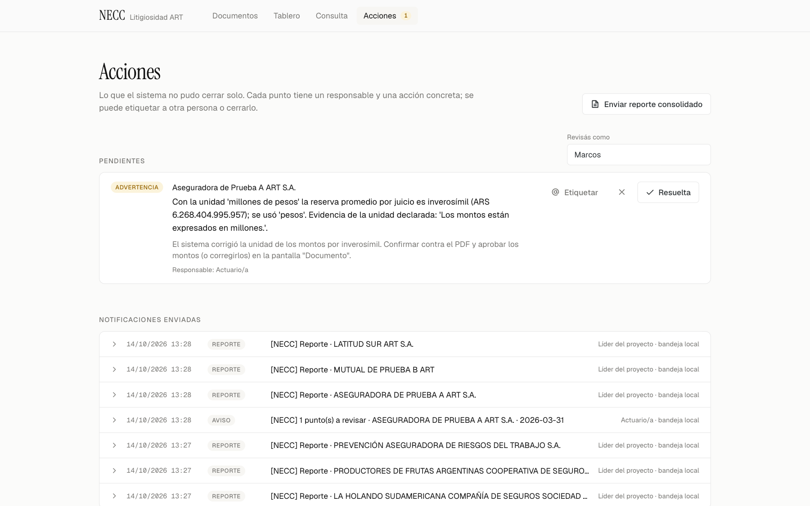

Del PDF al Excel base, con la prueba de cada número.
Extracción automática y verificable de los indicadores de litigiosidad que las ART informan en sus notas a los estados contables.
Text Mining · Maestría en Ciencia de Datos · Universidad AustralOctubre 2026
Qué ofrecemos
El Excel base de litigiosidad ART, completo y verificado, sin carga manual.
Automático
Lee cada nota, en PDF o escaneada, y extrae los 9 indicadores de litigiosidad que exige la SSN en menos de 30 segundos.
Verificable
Cada número llega con su página y su cita. Dos lecturas independientes lo confirman; si no coinciden, lo revisa una persona.
Accionable
Tablero comparativo entre entidades, alertas a la persona responsable con la acción concreta, y consultas en lenguaje natural.
Para quién: equipos que consolidan indicadores de riesgo de las ART — análisis financiero, actuarial, supervisión y reaseguro.
El problema
Hoy, cada indicador se copia a mano, nota por nota.
15
ART exclusivas, más las aseguradoras mixtas que operan Riesgos del Trabajo.
× 4
estados contables por año, cada uno con su nota de reclamaciones judiciales.
Horas calificadas en una tarea repetitiva
Buscar la nota correcta entre 11 y 38 páginas, leer, copiar y controlar cada valor.
Errores que nadie detecta
Un dígito mal copiado o una unidad confundida llega al análisis sin que nadie lo note.
Sin trazabilidad
Ante una pregunta de auditoría, no queda registro de qué página respalda cada número.
No escala
El formato normalizado (RGAA 30.1.1.3 d) ya sumó 4 indicadores. Cada dato nuevo son más horas de la misma persona.
Fuente: SSN, Situación del Mercado Asegurador al 30/06/2025 (189 entidades; 15 operan en forma exclusiva en Riesgos del Trabajo).
Por qué no alcanza con buscar y copiar
El mismo dato, escrito de cinco maneras distintas.
Lista
III.- la cantidad de juicios abiertos es de 4112 casos;
Productores de Frutas
Cuadro
Cantidad de juicios abiertos, detallando los casos con pago parciales · 904 juicios, 512 casos…
La Holando
Comparativo
sin pagos parciales 5.664 3.451 con pagos parciales 27.830 26.369
Prevención ART · hay que sumar
Prosa
…el Pasivo Global Mínimo para los 327 juicios abiertos…
Latitud Sur
Imagen escaneada

Requiere OCR
Unidades mezcladas. Pesos, miles de pesos y hasta un cuadro que dice «en millones» con cifras que solo tienen sentido en pesos.
Cuentas implícitas. Juicios que hay que sumar; reservas a las que hay que restar la parte del fondo fiduciario y del reaseguro.
Dos años por cuadro. Columnas del período actual y del anterior, una al lado de la otra.
La solución
Cuatro pasos, sin carga manual.
01
Recibe
Se arrastra la nota a la web o se deja en una carpeta vigilada. PDF o escaneo; los duplicados se descartan solos.
02
Encuentra y lee
Ubica la nota de reclamaciones judiciales entre todas las páginas. Reglas del dominio e IA leen cada valor por separado.
03
Verifica
El número tiene que estar literalmente en la página. Pasa todo a pesos, hace las sumas y restas, y aplica las reglas de negocio.
04
Entrega y avisa
Excel base, tablero comparativo y, si algo no cierra, una alerta a la persona indicada con la acción concreta.
< 30s
por nota, de punta a punta
9
indicadores de litigiosidad por nota
100%
de los valores con página y cita
El producto
Cada número, con su prueba.
necc · Documento

1
Valor resaltado en el PDF
El fragmento de la página original, con el número marcado.
2
Dos lecturas que coinciden
Reglas del dominio e IA leen por separado; el acuerdo da la confianza.
3
Aprobar o corregir
Una persona valida en un clic. Cada corrección queda registrada con su autor.
El producto
Del dato a la decisión.
necc · Tablero

Tablero y Excel base
Una fila por entidad y período, en pesos. Gráficos comparativos y descarga con la trazabilidad de cada valor.
necc · Acciones

Alertas con responsable
Lo que no cierra va a quien corresponde —analista o actuario— con la acción concreta. Por correo, Slack o la propia web.
Por qué esta solución
Más rápido que a mano. Más confiable que un chat.
Carga manual
Chat de IA genérico
NECC
Tiempo por nota
≈ 20 min de analista*
Minutos, copiando y pegando
< 30 s
¿Se puede verificar cada número?
Depende de quien lo cargó
No: puede inventar cifras
Sí: página, cita y doble lectura
Cuadros escaneados
Sí, lento
Parcial
Sí, con OCR
Avisa cuando algo no cierra
No
No
Sí, con responsable y acción
Registro para auditoría
No
No
Cada valor, corrección y consulta
Costo por nota adicional
Horas de analista
Licencia por usuario
≈ USD 0,02
* Supuesto a medir en la Fase 1 con el analista que hoy hace la tarea.
Resultados de la prueba de concepto
Probado de punta a punta con seis notas.
54/54
valores correctos frente a la carga verificada a mano
6/6
notas completas, incluidas dos con cuadros escaneados
< 30s
por nota, desde el PDF hasta el Excel base (9 a 21 s medidos)
0,02USD
costo estimado de procesamiento por nota
Qué se probó
3 notas reales al 31/03/2026 (La Holando, Productores de Frutas, Prevención ART) y 3 variantes difíciles armadas con casos reales: cuadro escaneado, comparativo escaneado en miles y prosa con restas.
Un caso que lo muestra
Un cuadro decía «montos en millones»: tomado al pie de la letra, daba ARS 6,3 billones por juicio. El sistema lo detectó, usó la unidad correcta y avisó al actuario.
Las reglas se ajustaron con estas mismas notas, así que el resultado es optimista: el piloto mide sobre un trimestre de notas no vistas, con meta ≥ 95 %.
Alcance del piloto
Qué incluye y qué queda para después.
Incluido
Notas de todas las ART de un trimestrePDF con texto o escaneado
Los 9 indicadores de litigiosidadRGAA 33.4.1.6.1.6 y 30.1.1.3 d)
Excel base, tablero y alertasCon trazabilidad de cada valor
Revisión humana y consultas en lenguaje naturalAprobar, corregir, preguntar con citas
Fuera de esta etapa
Otros indicadores de las notasCapitales mínimos, cobertura: se agregan por configuración
Series históricas de varios añosPrevistas para la etapa de producción
Integración con sistemas internos del clienteEl intercambio es por Excel y web
Información no públicaSolo notas presentadas ante la SSN
Equipo
Tres personas, sin infraestructura propia.
Desarrollador/a de NLP
100%
Opera el sistema, incorpora variantes nuevas y mide la exactitud en cada fase.
Analista de dominio
50%
Define los criterios de negocio, valida resultados y revisa las alertas. Puede ser del equipo del cliente.
Coordinación
10%
Seguimiento del plan y preparación de cada punto de decisión con el patrocinador.
Del lado del cliente: un patrocinador que decide al final de cada mes. Infraestructura: una máquina virtual chica, sin GPU ni licencias.
Cronograma
Primer Excel base automático en el mes 2.
MES 1
Diagnóstico
Medir el tiempo y los errores actuales. Reunir un trimestre de notas. Acordar los criterios de negocio.
Decisión¿El ahorro medido justifica seguir?
MES 2
Piloto
Procesar el trimestre completo y ajustar la configuración con las variantes nuevas.
Decisión¿≥ 95 % correcto y 100 % trazable?
MES 3
En paralelo
Correr junto al proceso manual un trimestre real. Conectar correo o Slack del equipo.
Decisión¿Reemplaza la carga manual?
MES 4 EN ADELANTE
Producción
Operación trimestral, series históricas y nuevos indicadores según prioridad.
SeguimientoExactitud y tiempos, cada trimestre
≥ 95%
campos correctos sin intervención, en notas no vistas
100%
valores con página y cita verificables
100%
de los desacuerdos entre lecturas, con alerta
≤ 5min
de analista por nota, contra la línea de base del mes 1
Metas del piloto, a ratificar en el diagnóstico.
Inversión
Un piloto acotado, con salida en cada mes.
USD 15.070
Piloto de 3 meses · estimación con imprevistos del 10 %
Desarrollador/a de NLP · 100 %
9.000
Analista de dominio · 50 %
3.600
Coordinación · 10 %
900
Infraestructura y uso de IA · VM sin GPU, API
200
Imprevistos · 10 %
1.370
Operación anual posterior
≈ USD 2.400
Mantenimiento a demanda y hosting. La revisión la hace el analista que hoy carga.
Costo por nota procesada
≈ USD 0,02
Uso de IA medido en tokens; 1.000 notas ≈ USD 20.
Estimaciones en dólares, sujetas a tarifas vigentes. Casi todo el presupuesto son horas de personas; la tecnología cuesta ≈ USD 200.
Qué compra el cliente
Lo que se paga no son horas: es control.
La cuenta
Carga manual hoy 60 notas por año × 20 min*
≈ 20 h/año
Historia de 5 años 300 notas, una sola vez
≈ 100 h
Operación de NECC mantenimiento y hosting
USD 2.400/año
Veinte horas al año valen ≈ USD 300: el ahorro de tiempo es real, pero chico. El valor está en lo que la carga manual no puede dar.
Errores que no llegan al análisis
Un cuadro decía «en millones»: la reserva por juicio quedaba un millón de veces más grande. Se detectó y se avisó al actuario.
Auditoría resuelta
Cada valor con página, cita, método de lectura y quién lo aprobó.
El dato el mismo día
El Excel base se completa cuando se publica la nota, no cuando hay tiempo para cargarla.
Crecer sin sumar personas
Cada indicador nuevo es configuración, no horas. Cinco años de historia se procesan en una tarde.
* 15 ART exclusivas × 4 trimestres. Los 20 min por nota son un supuesto a medir en el mes 1; analista a USD 2.400/mes ≈ USD 15/h.
Riesgos y control
Qué puede salir mal y cómo se controla.
Una entidad cambia el formato
Las variantes de redacción se agregan en una configuración legible, sin programar. La IA cubre lo que las reglas no conocen.
Una lectura incorrecta
Doble lectura independiente, verificación literal contra la página y revisión humana de todo lo que no coincide.
Unidades mal interpretadas
Todo se normaliza a pesos y se controla la verosimilitud (reserva por juicio); lo atípico va al actuario.
Dependencia del proveedor de IA
El modelo es un componente reemplazable, incluso por uno local. Cada cambio se re-evalúa con el set de referencia.
Patrocinador. Decide en cada punto de control.
Analista de dominio. Dueño de los criterios y de la configuración.
Datos. Solo información pública presentada a la SSN; todo queda registrado.
Próximo paso
Para empezar, pedimos tres cosas.
1
Aprobar el piloto de 3 meses
≈ USD 15.070, con punto de decisión al final de cada mes.
2
Designar un analista de dominio
Media jornada, para acordar criterios y validar los resultados.
3
Acceso a un trimestre de notas y al Excel base actual
Para medir la línea de base y comparar contra el proceso manual.
NECCLitigiosidad ART
Gracias.
Del PDF al Excel base, con la prueba de cada número. La demo está funcionando: podemos procesar una nota en vivo.
Sumas y restas, unidades a pesos, control de verosimilitud y reglas de negocio.
Reglas declarativas
05
Almacenamiento
Cada valor con su evidencia, método y confianza; exportación al Excel base.
SQLiteExcel
06
Visualización
Web para cargar, revisar, aprobar y comparar entidades.
FastAPIReact
07
Consulta
Preguntas en lenguaje natural respondidas solo con los documentos, citando página.
BM25 + embeddingsRRFCitas
08
Acción
Asigna cada alerta a un responsable y notifica con la acción concreta.
CorreoSlack
La ontología del dominio —conceptos, sinónimos, cuentas y reglas— vive en un archivo de configuración: agregar una variante no requiere programar.
Anexo · Evaluación
Dos lecturas independientes, medidas por separado.
Método
Valores correctos
Notas completas
Unidad correcta
Solo reglas del dominio
54/54 · 100 %
6/6
6/6
Solo IA
51/54 · 94,4 %
5/6
5/6
NECC, las dos combinadas
54/54 · 100 %
6/6
6/6
Dónde falló la IA sola
Tomó «millones» del pie de un cuadro escaneado: tres montos multiplicados por un millón. La combinación detectó la unidad inverosímil, usó pesos y dejó 4 alertas para revisión humana.
Límite de esta medición
Seis notas, tres de ellas variantes armadas, y reglas ajustadas sobre esas mismas notas. En notas nuevas se espera que la IA cubra lo que las reglas no conocen: eso mide el piloto.
Localización de la nota correcta: 6/6. La IA no es determinista: en una corrida anterior dio 50/54. Se reproduce con uv run necc evaluar.
Anexo · Preguntas frecuentes
Lo que suelen preguntar.
¿Qué pasa si el modelo de IA se equivoca?
Cada número se contrasta con la página y con una segunda lectura por reglas. Si no coinciden, no entra sin revisión humana.
¿Dónde quedan los datos?
En una base propia del cliente. Al proveedor de IA solo viajan páginas de notas públicas; se puede usar un modelo local.
¿Y si una ART cambia cómo redacta la nota?
La IA suele leerla igual; la variante se agrega a la configuración y queda cubierta también por reglas.
¿Sirve para otros indicadores?
Sí. Se definen en la ontología con sus sinónimos y reglas; el resto del sistema no cambia.
¿Cuánto tarda en estar operativo?
El sistema ya funciona. En el mes 2 del piloto se entrega el primer Excel base de un trimestre completo.
¿Quién lo mantiene después?
Mantenimiento a demanda del desarrollador y hosting: ≈ USD 2.400 por año. Los criterios los cuida el analista que hoy hace la carga.
Anexo · Demo
Cómo ver la demo funcionando.
cd mvp && uv sync # dependencias de Python
npm --prefix web install && npm --prefix web run build # interfaz web (una vez)
uv run necc ejecutar data/muestras # procesa las notas de ejemplo
uv run necc ui # http://localhost:8000
uv run necc evaluar # exactitud contra la carga verificada
Requiere una clave de Gemini en mvp/.env. Sin clave o sin conexión, --sin-llm procesa solo con reglas.